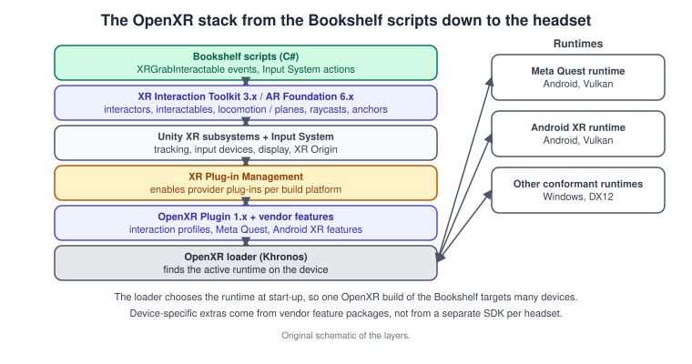
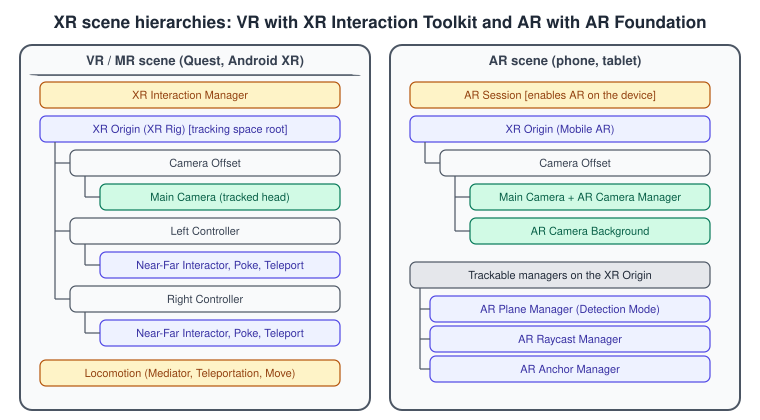
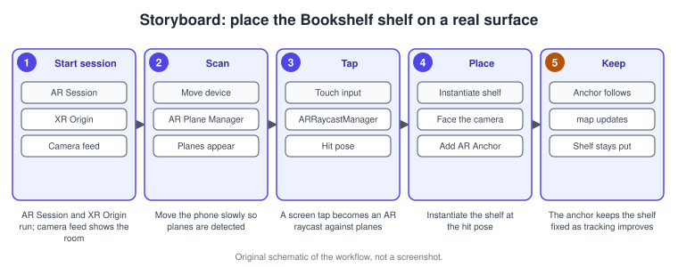

XR Development
|
This content was generated with the assistance of AI and should be verified against the official documentation before being relied on in production. |
Extended reality (XR) is the umbrella for three kinds of application. In virtual reality (VR) the application simulates a self-contained environment around the user. In augmented reality (AR) it layers content over a view of the real world. Mixed reality (MR) lies between: a headset with passthrough cameras blends its own environment with the room. Unity supports all three through one framework of provider plug-ins, a set of support packages and a few scene objects, and this page shows how the Bookshelf becomes a VR shelf you can pick books from and an AR shelf you can place on your desk.
The facts were checked in November 2026. The page documents Unity 6.3 LTS (6000.3) and the package versions of that release: XR Plug-in Management 4.7, OpenXR Plugin 1.19, XR Interaction Toolkit 3.7, AR Foundation 6.7 (with the ARKit and ARCore plug-ins at 6.7), XR Hands 1.10, Unity OpenXR Meta 2.7 and Unity OpenXR Android XR 1.5. The Input System package is required by all of them. Headsets need the Android Build Support module (Meta Quest and Android XR run Android), phones need Android or iOS support, and building for iOS needs a Mac with Xcode. The Bookshelf scene is the one from Build Profiles and Platforms, and the shared model is bookshelf.glb, imported as a prefab.
The device-independent ideas behind this page are in Augmented and Mixed Reality Basics; the Apple side of AR is in Augmented Reality and visionOS; Metal’s own visionOS path is in Metal on visionOS.
The XR architecture in Unity

Unity’s XR plug-in framework separates what your game wants from what a device provides. At the bottom, a provider plug-in (a package) knows how to talk to one family of devices: the OpenXR plug-in for any device with an OpenXR runtime, the ARKit plug-in for iOS, the ARCore plug-in for Android phones, the visionOS plug-in for Apple Vision Pro, and vendor packages such as Unity OpenXR Meta and Unity OpenXR Android XR. XR Plug-in Management decides which provider is active for each build platform. Above it, Unity’s XR subsystems expose tracking, input devices and display in a device-independent way, and two support packages build on that: the XR Interaction Toolkit for interaction in VR and MR, and AR Foundation for phone and headset AR.
OpenXR is the open, royalty-free standard from Khronos that lets one application target many headsets. Unity’s OpenXR plug-in is linked to a specific Khronos OpenXR SDK and loads whichever runtime is active on the device. The documented runtimes are the Meta Quest runtime (Android, Vulkan preferred), the Android XR runtime (Android, Vulkan preferred, full feature parity through the Android XR package) and other conformant runtimes such as SteamVR on Windows (DirectX 12 preferred). Because the runtime is chosen at start-up, one OpenXR build of the Bookshelf can run on several devices, and device-specific features come through vendor feature packages instead of separate SDKs. Unity cannot test every combination of hardware and runtime, so test on each device you ship to.
Older tutorials use vendor-specific plug-ins (the Oculus XR Plugin, the Windows XR plug-in) and the AR Session Origin object. They still exist for some devices, but new work uses OpenXR with the vendor feature package and the XR Origin; see the section on outdated books below.
Set up an XR project
Create the project and the build profile
-
Create the project in the Unity Hub. An XR template (VR, Mixed Reality, or the multiplayer variants) adds the packages and a working scene; the plain URP 3D template works too, and you add packages yourself. Even with a template you must still configure the project as below.
-
Open File > Build Profiles, select Add Build Profile and choose Meta Quest or Android XR in the Platform Browser. Unity installs the OpenXR plug-in automatically for both. Since Unity 6.3 the platform browser also lets you install Meta’s partner packages (such as the Meta XR Core SDK) when you add the Meta Quest profile, so they do not have to come from the Asset Store.
-
Select Switch Profile. By default the Meta Quest and Android XR platforms share Player settings with Android; the build profile lets you override settings for the headset only (see Build Profiles and Platforms).
Unity supports development for Meta Quest 2, 3 and 3S and Quest Pro with these packages, and for Google’s Android XR headsets with the Android XR package; the Meta Quest and Android XR platforms exist in the Build Profiles window since Unity 6.1.
Enable the provider in XR Plug-in Management
-
Open Edit > Project Settings and select XR Plug-in Management. If the package is missing, select Install XR Plug-in Management.
-
Select the tab for your build platform (for example the Android tab for Quest).
-
Tick OpenXR in the plug-in providers list. Unity installs the package if needed.
-
In OpenXR, open the Features tab and select the interaction profile of the controllers you test with (for example the Oculus Touch controller profile for Quest), plus any feature group offered by a vendor package (for example the Meta Quest support feature).
-
Check Project Validation under XR Plug-in Management and fix every reported error. The XR packages contribute rules, for example about the render pipeline, the color space or the graphics API.
Disabling a provider does not remove its package; remove it in the Package Manager. Initialize XR on Startup decides whether the app starts in XR mode immediately: turn it off if the app starts as a normal screen app and enters XR on demand.
Choose the render pipeline and graphics settings
The XR Interaction Toolkit documentation recommends the Universal Render Pipeline for the best performance and compatibility on XR platforms; HDRP and the Built-In Render Pipeline have more limits there, and the Built-In Render Pipeline is deprecated from Unity 6.5. XR draws every visible object twice, once for each eye, so rendering efficiency matters more than anywhere else: single-pass techniques reduce the duplication but need shaders written for them, and foveated rendering lowers the resolution of the periphery. Unity 6.3 adds on-tile post-processing for untethered headsets (Meta Quest, Android XR and other OpenXR runtimes), which keeps some post effects in tile memory, and lets the Render Graph Viewer connect to player builds on devices. See URP in Depth and Render Graph and Custom Passes.
Source: XR graphics, On-tile post-processing (URP)
The XR Origin

Every XR scene needs an XR Origin: a set of GameObjects and components that transform tracking data into the scene’s world space and control the scene camera. XR devices pick an origin point in the real world when they initialise, and report the head, hands, controllers and detected objects relative to it. Used directly, that data would put the user at the scene origin; the XR Origin lets you place the user anywhere in the scene (position it where the user should appear, and rotate it around its y axis to choose the facing direction).
Add one from the GameObject > XR menu; which options you see depends on the installed packages. The names changed over time: the old XR Rig became the XR Origin (and the Camera Offset component was replaced by the XR Origin component), and in AR Foundation 5 the AR Session Origin was replaced by XR Origin (AR) and XR Origin (Mobile AR). Child GameObjects of the origin represent tracked entities: the camera is the head or hand-held device; controllers are children whose transforms follow the tracked controllers, but they have no mesh and no input handling until you add them. The Starter Assets sample of the XR Interaction Toolkit contains a ready-made XR Origin prefab with interactors and locomotion, which is the quickest start.
Source: Set up an XR scene, XR Origin
VR interaction with the XR Interaction Toolkit 3.x
The toolkit is a component-based interaction system. Its core is a set of Interactor components (things that act: hands, controllers, rays, pokers, sockets), Interactable components (things that can be acted on) and an XR Interaction Manager that ties them together. A scene needs, at a minimum, an XR Interaction Manager, an XR Origin and at least one interactor, usually one specialised interactor per hand. For 3D interaction the objects need interactable components. For UI, world-space canvases need an XR UI Input Module. For locomotion the scene needs a Locomotion Mediator, an XR Body Transformer and Locomotion Providers (move, turn, teleport); teleport areas and anchors are interactables.
Input comes from the XR Default Input Action asset in the Starter Assets, which maps the select action to the grip button and continuous move to the thumbsticks. You can edit the bindings or assign other input sources to each interactor. Hand tracking needs the XR Hands package and a platform that supports it. The toolkit has up to 31 interaction layers that decide which interactors can work with which interactables; give layers names in the toolkit settings before using them (the teleport components assume layer 31 is named Teleport). Without a headset, the XR Interaction Simulator turns mouse and keyboard input into controller input.
A grabbable Bookshelf book
Add an XR Grab Interactable to a book: with default settings the book follows the interactor while selected and can be thrown on release (it inherits velocity). The grab interactable requires a Rigidbody and a Collider (mesh colliders must be convex). The following script adds visual feedback and reports pickups, using the toolkit’s events:
// Assets/Scripts/Bookshelf/BookGrabFeedback.cs
using UnityEngine;
using UnityEngine.XR.Interaction.Toolkit;
using UnityEngine.XR.Interaction.Toolkit.Interactables;
namespace Bookshelf
{
/// <summary>Tints a book while it is hovered or held and logs which interactor grabbed it.</summary>
[RequireComponent(typeof(XRGrabInteractable))]
public sealed class BookGrabFeedback : MonoBehaviour
{
static readonly int BaseColor = Shader.PropertyToID("_BaseColor");
[SerializeField] Renderer coverRenderer;
[SerializeField] Color hoverColor = new Color(0.9f, 0.8f, 0.3f);
[SerializeField] Color heldColor = new Color(0.3f, 0.8f, 0.4f);
XRGrabInteractable interactable;
MaterialPropertyBlock block;
Color originalColor;
void Awake()
{
interactable = GetComponent<XRGrabInteractable>();
block = new MaterialPropertyBlock();
if (coverRenderer != null && coverRenderer.sharedMaterial.HasProperty(BaseColor))
{
originalColor = coverRenderer.sharedMaterial.GetColor(BaseColor);
}
}
void OnEnable()
{
interactable.hoverEntered.AddListener(OnHoverEntered);
interactable.hoverExited.AddListener(OnHoverExited);
interactable.selectEntered.AddListener(OnSelectEntered);
interactable.selectExited.AddListener(OnSelectExited);
}
void OnDisable()
{
interactable.hoverEntered.RemoveListener(OnHoverEntered);
interactable.hoverExited.RemoveListener(OnHoverExited);
interactable.selectEntered.RemoveListener(OnSelectEntered);
interactable.selectExited.RemoveListener(OnSelectExited);
}
void OnHoverEntered(HoverEnterEventArgs args)
{
if (!interactable.isSelected)
{
Tint(hoverColor);
}
}
void OnHoverExited(HoverExitEventArgs args)
{
if (!interactable.isSelected)
{
Tint(originalColor);
}
}
void OnSelectEntered(SelectEnterEventArgs args)
{
Tint(heldColor);
Debug.Log($"{name} grabbed by {args.interactorObject.transform.name}");
}
void OnSelectExited(SelectExitEventArgs args)
{
Tint(originalColor);
Debug.Log($"{name} released{(args.isCanceled ? " (canceled)" : string.Empty)}");
}
void Tint(Color color)
{
if (coverRenderer == null)
{
return;
}
coverRenderer.GetPropertyBlock(block);
block.SetColor(BaseColor, color);
coverRenderer.SetPropertyBlock(block);
}
}
}In toolkit 3.7 the interactable and interactor classes live in the Interactables and Interactors namespaces and the event argument classes such as SelectEnterEventArgs live in UnityEngine.XR.Interaction.Toolkit; scripts written for older versions may need updated using lines. Physics for held objects is covered in 3D Physics, and mapping controller buttons to actions in Input System.
AR with AR Foundation 6.x
AR Foundation is a cross-platform AR API over the platform providers: ARKit on iOS, ARCore on Android phones, and other providers for headsets where they support the features. Each feature is wrapped by a trackable manager component on the XR Origin that creates GameObjects for the things the device detects (trackables). Which features a platform supports differs, and the package documentation has a platform support table for each feature.
Two GameObjects are necessary in every AR scene: an AR Session, which enables AR on the device, and an XR Origin, which enables device tracking and transforms trackables into Unity’s coordinate system. Create them from the Hierarchy context menu: XR > AR Session and XR > XR Origin (Mobile AR). The default hierarchy is AR Session next to an XR Origin whose child Camera Offset holds the Main Camera. Without either object AR does not work.
Planes, raycasts and anchors
-
AR Plane Manager detects flat surfaces and instantiates a Plane Prefab for each. Detection Mode chooses horizontal, vertical, everything or not-axis-aligned planes, and the manager reports added, updated and removed planes in its
trackablesChangedevent. Disable the component when planes are not needed, which can improve performance; on a device without plane detection the manager disables itself. -
AR Raycast Manager casts a ray against detected trackables without needing them as GameObjects.
Raycast(Vector2 screenPoint, List<ARRaycastHit> hits, TrackableType types)casts from a screen position, and a world-based overload takes aRay. Results are sorted closest first;ARRaycastHit.trackablecan be cast to the specific type, for exampleARPlane. If the platform does not implement raycast against planes, the manager can fall back to a physics ray cast when an AR Plane Manager is also in the scene. -
AR Anchor Manager creates anchors: poses the platform keeps fixed in the real world as its understanding of the space improves. A trackable’s pose can drift or be corrected; content parented to an anchor stays put. Unity recommends
TryAddAnchorAsync(async, the most widely supported way) over adding anARAnchorcomponent at runtime, which can fail and then disables itself. You cannot move an anchor once it exists, and an anchor that leaves the camera view usually becomes Limited rather than removed.
Place the Bookshelf shelf on a table

The Bookshelf AR scene has an AR Session, an XR Origin (Mobile AR) with an AR Plane Manager (horizontal planes), an AR Raycast Manager and an AR Anchor Manager, and the shelf prefab built from bookshelf.glb (scaled down to table size by the script). The script waits for a touch, casts against the planes, and places the shelf once:
// Assets/Scripts/Bookshelf/PlaceShelfOnPlane.cs
using System.Collections.Generic;
using UnityEngine;
using UnityEngine.InputSystem;
using UnityEngine.XR.ARFoundation;
using UnityEngine.XR.ARSubsystems;
namespace Bookshelf
{
/// <summary>Places the shelf prefab on the first tapped plane, anchored to the real world.</summary>
[RequireComponent(typeof(ARRaycastManager), typeof(ARAnchorManager))]
public sealed class PlaceShelfOnPlane : MonoBehaviour
{
[SerializeField] GameObject shelfPrefab;
[SerializeField] float tableScale = 0.4f;
readonly List<ARRaycastHit> hits = new List<ARRaycastHit>();
ARRaycastManager raycastManager;
ARAnchorManager anchorManager;
GameObject placedShelf;
bool placing;
void Awake()
{
raycastManager = GetComponent<ARRaycastManager>();
anchorManager = GetComponent<ARAnchorManager>();
}
void Update()
{
if (placedShelf != null || placing)
{
return;
}
var touchscreen = Touchscreen.current;
if (touchscreen == null || !touchscreen.primaryTouch.press.wasPressedThisFrame)
{
return;
}
Vector2 screenPoint = touchscreen.primaryTouch.position.ReadValue();
if (raycastManager.Raycast(screenPoint, hits, TrackableType.PlaneWithinPolygon))
{
PlaceAsync(hits[0].pose);
}
}
async void PlaceAsync(Pose pose)
{
placing = true;
// The anchor keeps the shelf fixed as the platform refines its map of the room.
var result = await anchorManager.TryAddAnchorAsync(pose);
if (result.status.IsSuccess())
{
ARAnchor anchor = result.value;
placedShelf = Instantiate(shelfPrefab, anchor.transform);
placedShelf.transform.localPosition = Vector3.zero;
placedShelf.transform.localRotation = Quaternion.identity;
placedShelf.transform.localScale = Vector3.one * tableScale;
}
else
{
Debug.LogWarning("The platform could not create an anchor; try another spot.");
}
placing = false;
}
}
}Source: AR Foundation: Single ray casts, AR Anchor Manager component, AR Plane Manager component, AR Foundation: Scene setup
The XR Interaction Toolkit can also drive AR: with AR Foundation installed it provides an AR gesture system that maps screen touches to gesture events through the Input System, screen-space input components for an XRRayInteractor, and an ARTransformer that turns gestures (place, select, translate, rotate and scale) into object manipulation. That is a good alternative to the hand-written script above when you also want pinch-to-scale.
Run and test
To run on a headset or phone, connect it, open File > Build Profiles, choose the platform, pick the device in the build settings if the platform asks for it, and select Build And Run. The result is an ordinary Android (or iOS) build, so signing, keystores and Xcode work as described in Build Profiles and Platforms. On Windows some provider plug-ins offer a hybrid Play mode in which the project runs on a connected headset while the Game view mirrors it (left eye, right eye, both eyes or an occlusion mesh view), and Quest 2 and Pro can use Quest Link this way for faster iteration than building. Unity does not support Android emulators; use a device or the XR Interaction Simulator.
Source: Run an XR application
Common mistakes
-
Forgetting the AR Session or the XR Origin. Without both, an AR scene shows nothing useful; the Origin also controls the camera, so do not add a second camera to the scene root.
-
Not enabling the provider for the build platform. The tabs in XR Plug-in Management are per platform; enabling OpenXR on the desktop tab does nothing for an Android build.
-
Skipping Project Validation. Many black screens and tracking problems are rules the validation window reports.
-
Missing interaction profile. If no interaction profile is selected for the controller you test with, the controller does not report input.
-
No Rigidbody or Collider on a grab interactable. The component needs both; a non-convex mesh collider is not accepted.
-
Moving the camera directly. The camera belongs to the tracked head; move the XR Origin (or use locomotion providers) instead.
-
Running plane detection all the time. Disable the AR Plane Manager and Raycast Manager when not needed.
-
Mixing package generations. Toolkit 2.x code and AR Session Origin prefabs from old samples do not match the 3.x and 6.x packages; recreate the objects from the GameObject > XR menu.
-
Testing only in the Editor. Frame rate, tracking and comfort are visible only on a device.
Performance notes
-
XR needs high and consistent frame rates for comfort. Measure on the headset with the Profiler and the platform tools (see Profiling and Optimization).
-
Rendering in stereo draws everything twice: use URP, keep draw calls and overdraw low, and use the single-pass and foveated rendering options that your device supports.
-
Unity 6.3 adds automatic viewport dynamic resolution for OpenXR headsets (a feature of the OpenXR plug-in), which changes the render resolution based on device performance, and on-tile post-processing for untethered devices.
-
Keep per-frame allocations out of Update; a garbage-collection hitch is a visible stutter in a headset.
-
In AR, disable the trackable managers (planes, raycasts, point clouds) you no longer need; the AR Foundation documentation notes this can improve performance.
-
Controllers and hands are tracked at the render rate: do physics (3D Physics) in
FixedUpdateand read input inUpdate, as usual.
What changed recently
| Version | Change |
|---|---|
AR Foundation 5 |
The AR Session Origin is replaced by the XR Origin (AR) and XR Origin (Mobile AR) options. |
Unity 6.1 |
Meta Quest and Android XR appear as platforms and build profiles in the Build Profiles window. |
Unity 6.3 LTS |
On-tile post-processing for XR; Meta partner packages in the Platform Browser; automatic viewport dynamic resolution for OpenXR headsets; Render Graph Viewer for player builds on devices. |
Unity 6.5 |
The Built-In Render Pipeline is deprecated, so XR projects should move to URP. |
Where the books are outdated
UIA is Unity in Action (3rd edition). GDP is Game Development Patterns with Unity 2021 (2nd edition) and does not cover XR.
-
UIA chapter 13 uses the Oculus and Windows XR plug-ins and the AR Session Origin. In Unity 6 use XR Plug-in Management with OpenXR (and the Meta Quest or Android XR profile), and the XR Origin (Mobile AR) next to an AR Session.
-
UIA chapter 13 shows
File > Build Settings. Use File > Build Profiles (Unity 6.0 and later), where the Meta Quest and Android XR platforms have their own profiles.
See also
-
Build Profiles and Platforms: the Meta Quest and Android profiles, signing and building.
-
Input System: actions and bindings behind controller input.
-
3D Physics: the Rigidbody that grabbable objects use.
-
URP in Depth: the recommended render pipeline for XR.
-
Profiling and Optimization: measuring on the headset.
-
Multiplayer and Netcode: a co-op Bookshelf in VR.
-
Augmented and Mixed Reality Basics: tracking, anchors and pose concepts behind AR.
-
Coordinate Spaces and Transforms: how tracking space becomes scene space.
-
Metal on visionOS: the native Apple headset path.
-
Vulkan on Android: the graphics API most standalone headsets use.
-
Augmented Reality and visionOS: Apple’s AR frameworks, a comparison for ARKit and RealityKit.